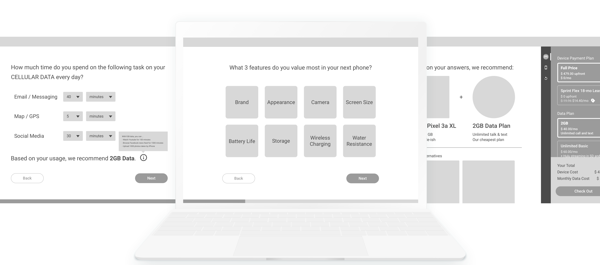
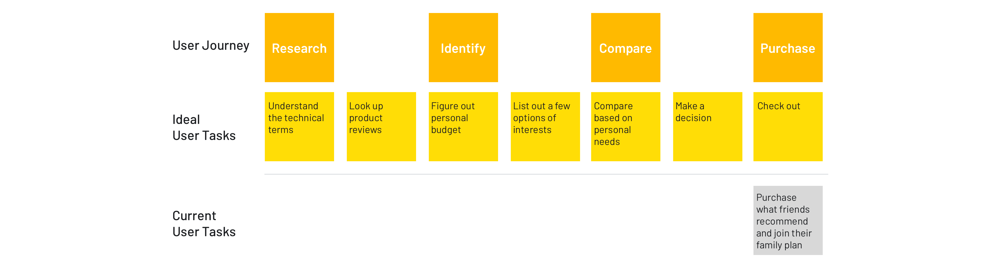
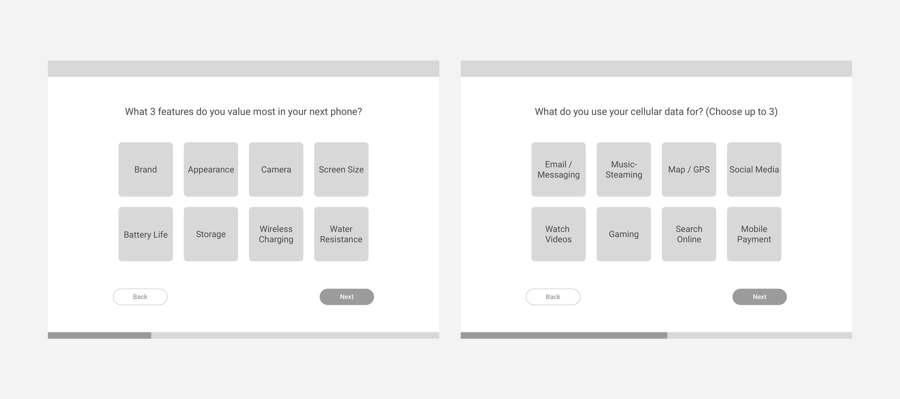
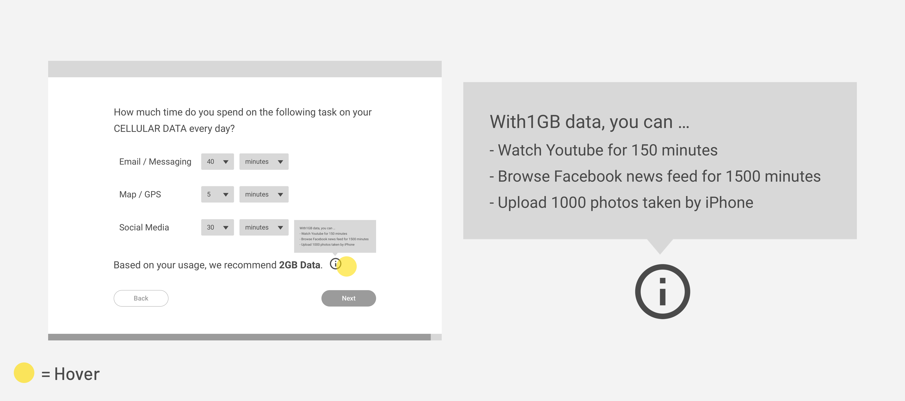
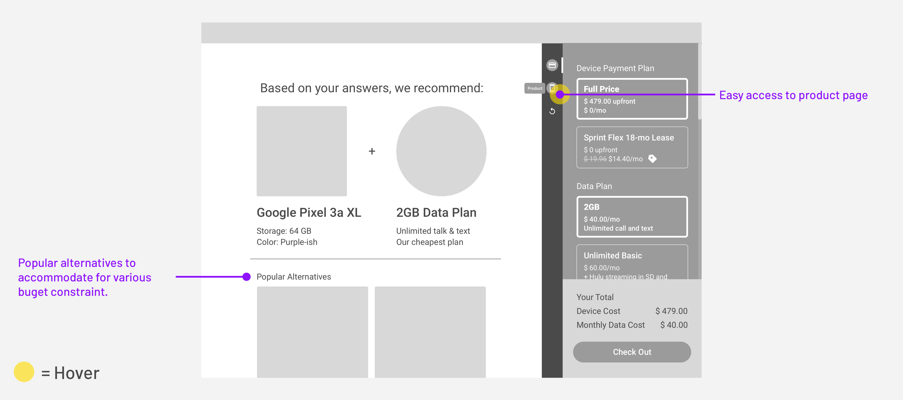

Sprint Design Challenge
Design an Educational Experience for Shopping
Type
- Individual Work
- Interaction Design
Duration
- 4 days
My Role
- Interaction Designer
- UX Researcher
What I Did
- Needs Assessment
- Interaction Design
Design Challenge
Design an educational product to identify usage behavior and products of perfect match
As part of the interview for the Digital UX Designer at Sprint, I was challenged to design an educational product that customers can use to identify usage behavior and the products that best fit their needs.
I was presented with 2 personas – a college student and a young professional. Both of them share the following characteristics:
- Busy lifestyle: Prefer online shopping; Little time for research; Enjoy social life
- Financially responsible: Have little but steady income; Would save money for long-term goals
- Limited knowledge for products: Have difficulties understanding technical terms; Interested in new technology
The 2 personas lay the foundation for my analysis and design afterwards.
Finding a perfect phone can be costly - in terms of time and money
Why Educate Users?
Assumption: Users go with defaults
Users like to go with the default option. Namely, they join their friend’s family plans for unlimited data, calls and text due to limited time to search. Also, they always go with the latest model because they’re tech-savvy but have a hard time understanding technical terms. Hence, they’re most likely spending more money than they should have or on products that don’t fit their needs. In the meanwhile, they are trying to save money.
In short, while both users are interested in new technology, they aren’t aware of their real needs nor alternative options because of the time it takes to research.
It's easy for users to forget about their needs and go with the easy option when things get complicated.
Solution Overview
Focus on the REAL needs
To uncover what meet the user needs, I came up with a quiz to walk them through the shopping experience. The quiz is short and focuses on the Top 3 features that users value and interact with most. This way, even under budget constraints, users can still enjoy the product and services that satisfies their most frequent use cases.
Screens of the quiz
The Research: An Ideal User Journey
Users go with defaults due to time constraints. To figure out how to make the search process easier, I map out the user journey flow to understand what it takes to find products that best fit user needs.
Explaining technical terms helps users not only save time but also feel more confident about the recommendation result.
As shown in the user journey flow above, we can see that it takes at least 3 extra steps and possibly way more hours before a final purchase in an ideal flow than the current flow. However, what the users didn’t realize is that the time and effort they’re saving is costing them way more money from their pockets.
How it Works
Knowing that the cost of time and effort is the reason for going with defaults, the question would be “How might we make search a less painful experience?” and “How might we raise awareness for a change?”.
Pain Point 1
There are too many features to look into.
Phones come in various features, shape and sizes, which is what makes researching time-consuming. As users look into more phones and data plans, they can easily get distracted by some fancy features they only use once in a blue moon. However, the reality is, the time spent on certain features can be much more than the rest of them.
Solution: Focus on the real needs
We use the quiz to help users stay focused on what they truly cares about. The quiz consists a series of questions that store staff usually ask customers to understand their usage behavior before they recommend any product/services.
Questions asked in the quiz only focus on the features that users value most before diving deeper into specifics.
Pain Point 2
Technical terms are hard to understand.
While both users are tech-savvy, they both have a hard time understanding technical terms, which leads to more hours on research and decision-making. Also, customers are cautious of the quiz created by the seller. Hence, not understanding what's the rationale behind the recommendation creates distrust.
Solution: Make technical terms more relatable
Aside from helping customers stay focused, educating customers also serves an important purpose – avoiding principal-agent problem. In other words, by giving customers control over their choice and understanding the rationale behind the recommendation, customers feel more confident about their decisions. Hence, we give relatable examples of technical terms along the way to help users better understand the situation.
Explaining technical terms helps users not only save time but also feel more confident about the recommendation result.
What If?
Edge Case
Customer isn’t so sure about the recommendation.
Users are always making tradeoffs between price and features. Also, they tend to be more cautious when shopping for expensive items online. Hence, it's most likely that users don't check out as soon as they arrive at the recommendation page.
Solution 1: Easy access to product page
Apart from color/size selection, providing easy access to the product page makes users feel knowledgeable about the recommendation associated to their choice. In addition, by including a quick switch between product page and checkout, I hope to increase the conversion rate from the quiz result.
Solution 2: Include popular alternatives
Since the questions included in the quiz only focus on the feature-level, the recommendation doesn’t necessarily fit into user’s budget constraint. Hence, in the recommendation page, we also include popular alternatives aka cheaper/more expensive options to satisfy users of various purchasing power.
Screen of the final recommendation page
Takeaways & Next Steps
Implementation
If the quiz is going to be implemented on Sprint's website, I'd recommend complementing the quiz with marketing CTA such as "Take a quiz to find your perfect phone" or "Are you paying more than you should?" to remind or raise user's awareness of money-saving. Moreover, before shipping the design, I have to make sure not only the usability of the UI itself but also be mindful of the target customers. In the CTA mentioned above, I'm targeting non-Sprint users, hoping to convert them to Sprint users. However, if the quiz only attracts current Sprint users and they find out that they're actually don't need unlimited plan which they'r currently on, it might take a toll on the business.
Reflection
To be honest, before I got my hands dirty on the design challenge, I thought it's just another "search" problem. However, it turned out more complicated than I'd expected as there are a lot of use cases to take into account when I was walking through the whole phone-purchasing journey. In addition, it's more than just a problem that feels like part of my everyday life or have experience with -- It also involves explaining technical terms, winning trust of the users and the impact it has on the business itself. Despite the complexity, I enjoy the design challenge a lot -- I got to have a taste of how my future work looks like and now I start to feel excited about what I'm going to work on in the future.